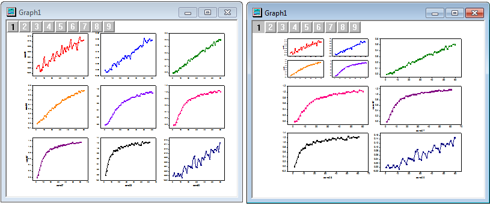
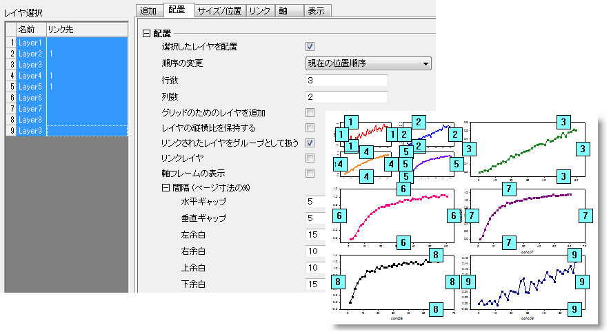

FAQ-714 レイヤをグループ化するには？
Set_same_size_label
最終更新日:2015/06/16
レイヤをグループ化するには、レイヤをリンクすることです。親レイヤ・子レイヤを問わず、グループ内のどれか一つのレイヤを編集すると、すべてのレイヤを一括で移動したりサイズ変更したりできます。一方、レイヤのリンクは、親レイヤの変更にのみ従います。

すべてのレイヤがリンクされていない、9パネルのグラフがあったとします。カスタマイズするには以下のように操作します。
- グラフをアクティブにし、グラフ操作：レイヤ管理を開きます。
- はじめに、お好みのレイヤをリンクしてグループ化します。レイヤ選択パネルでLayer2、Layer4 、Layer5を選択し、リンクタブに移動してリンク先に1をセットします。適用をクリックします。
- 次に、すべてのレイヤを望ましいレイアウトに編集します。レイヤ選択パネルですべてのレイヤを選択して配置タブに移動し、リンクされたレイヤをグループとして扱うチェックボックスにチェックを付け、列数3、行数2に設定します。軸フレームの表示にチェックが付いていないことを確認してください。そして 適用ボタン、OKボタンをクリックしてダイアログを閉じます。グループ化されたレイヤは一つのパネルに統合されます。

キーワード：レイヤ管理、複数レイヤ